Regressions
Theory
These are exercises and solutions meant as a compendium to my talk on Model Selection and Model Building.
I have prepared some Lecture Slides for this session.
Our Resarch Project
Today, we are looking at a big (and entirely fictional) data base of the common house sparrow (Passer domesticus). In particular, we are interested in the Evolution of Passer domesticus in Response to Climate Change which was previously explained here.
The Data
I have created a large data set for this exercise which is available here and we previously cleaned up so that is now usable here.
Reading the Data into R
Let’s start by reading the data into R and taking an initial look at it:
Sparrows_df <- readRDS(file.path("Data", "SparrowDataClimate.rds"))
head(Sparrows_df)
## Index Latitude Longitude Climate Population.Status Weight Height Wing.Chord Colour Sex Nesting.Site Nesting.Height Number.of.Eggs Egg.Weight Flock Home.Range Predator.Presence Predator.Type
## 1 SI 60 100 Continental Native 34.05 12.87 6.67 Brown Male <NA> NA NA NA B Large Yes Avian
## 2 SI 60 100 Continental Native 34.86 13.68 6.79 Grey Male <NA> NA NA NA B Large Yes Avian
## 3 SI 60 100 Continental Native 32.34 12.66 6.64 Black Female Shrub 35.60 1 3.21 C Large Yes Avian
## 4 SI 60 100 Continental Native 34.78 15.09 7.00 Brown Female Shrub 47.75 0 NA E Large Yes Avian
## 5 SI 60 100 Continental Native 35.01 13.82 6.81 Grey Male <NA> NA NA NA B Large Yes Avian
## 6 SI 60 100 Continental Native 32.36 12.67 6.64 Brown Female Shrub 32.47 1 3.17 E Large Yes Avian
## TAvg TSD
## 1 269.9596 15.71819
## 2 269.9596 15.71819
## 3 269.9596 15.71819
## 4 269.9596 15.71819
## 5 269.9596 15.71819
## 6 269.9596 15.71819
Hypotheses
Let’s remember our hypotheses:
- Sparrow Morphology is determined by:
A. Climate Conditions with sparrows in stable, warm environments fairing better than those in colder, less stable ones.
B. Competition with sparrows in small flocks doing better than those in big flocks.
C. Predation with sparrows under pressure of predation doing worse than those without. - Sites accurately represent sparrow morphology. This may mean:
A. Population status as inferred through morphology.
B. Site index as inferred through morphology.
C. Climate as inferred through morphology.
Quite obviously, hypothesis 1 is the only one lending itself well to regression exercises. Since we have three variables that describe sparrow morphology (Weight, Height, Wing.Chord) and multi-response-variable models are definitely above the pay-grade of this material, we need to select one of our morphology variables as our response variable here. Remembering the Classification exercise, we recall that Weight was the most informative morphological trait so far. Hence, we stick with this one for these exercises.
R Environment
For this exercise, we will need the following packages:
install.load.package <- function(x) {
if (!require(x, character.only = TRUE)) {
install.packages(x, repos = "http://cran.us.r-project.org")
}
require(x, character.only = TRUE)
}
package_vec <- c(
"ggplot2", # for visualisation
"nlme", # for mixed effect models
"HLMdiag" # for leverage of mixed effect models
)
sapply(package_vec, install.load.package)
## ggplot2 nlme HLMdiag
## TRUE TRUE TRUE
Using the above function is way more sophisticated than the usual install.packages() & library() approach since it automatically detects which packages require installing and only install these thus not overwriting already installed packages.
Linear Regression
Remember the Assumptions of Linear Regression:
- Variable values follow homoscedasticity (equal variance across entire data range)
- Residuals follow normal distribution (normality)
- Absence of influential outliers
- Response and Predictor are related in a linear fashion
Climate Conditions
Weight as a result of average temperature (TAvg)
Before we begin, let’s plot the data we want to model:
ggplot(data = Sparrows_df, aes(y = Weight, x = TAvg)) +
stat_smooth(method = "lm") +
geom_point() +
theme_bw()
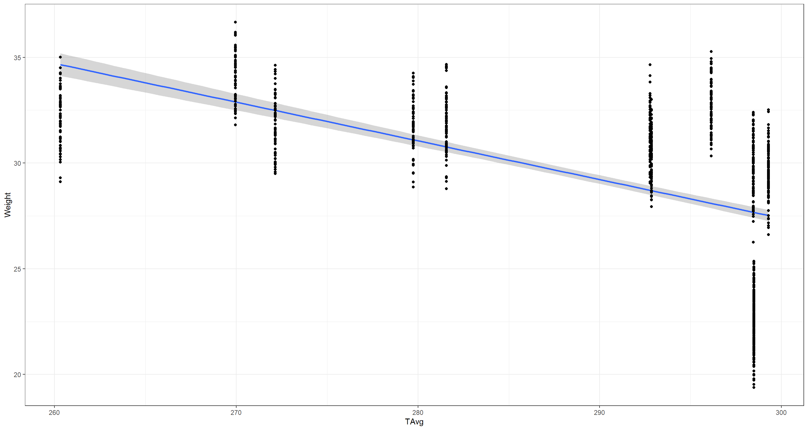 I have an inkling that we might run into some issues here, but let’s continue for now:
Let’s build the actual model:
H1_ClimateTavg <- lm(Weight ~ TAvg, data = Sparrows_df)
par(mfrow = c(2, 2))
plot(H1_ClimateTavg)
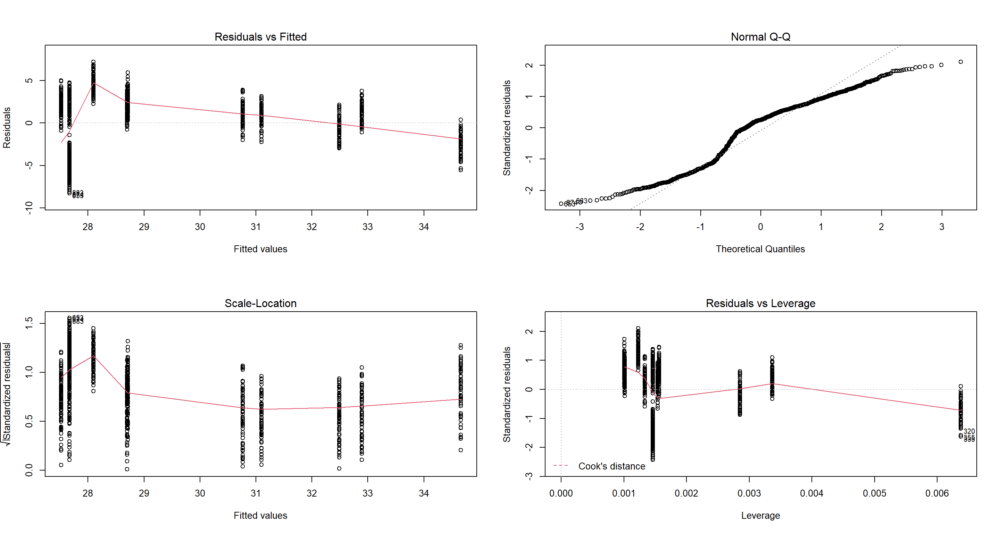 While the meeting of most of the assumptions here might be debatable, we certainly cannot accept a linear model with residuals this non-normal distributed. Sow hat do we? We try to remove as many confounding effects as possible!
Remember the plot-locations, climates, and population statues in the data set (go back here if necessary). How about we look exclusively at stations in the Americas which are all housing introduced sparrow populations and almost exclusively lie in coastal habitats? I’ll remove all non-coastal climate sites and only consider the central and North America here. Let’s do that:
# everything west of -7° is on the Americas
# every that's coastal climate type is retained
# everything north of 11° is central and north America
CentralNorthAm_df <- Sparrows_df[Sparrows_df$Longitude < -7 & Sparrows_df$Climate == "Coastal" & Sparrows_df$Latitude > 11, ]
ggplot(data = CentralNorthAm_df, aes(y = Weight, x = TAvg)) +
stat_smooth(method = "lm") +
geom_point() +
theme_bw()
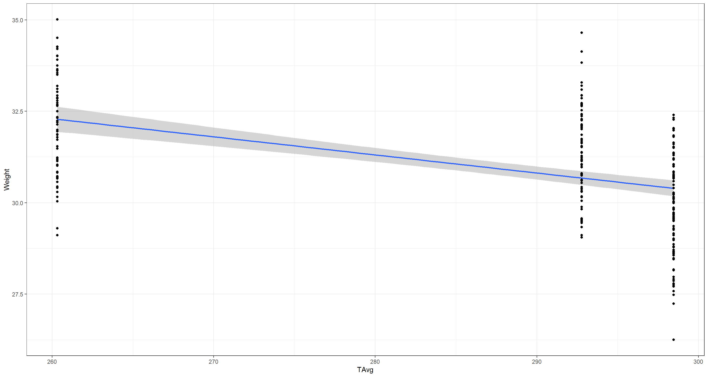
H1_ClimateTavg <- lm(Weight ~ TAvg, data = CentralNorthAm_df)
par(mfrow = c(2, 2))
plot(H1_ClimateTavg)
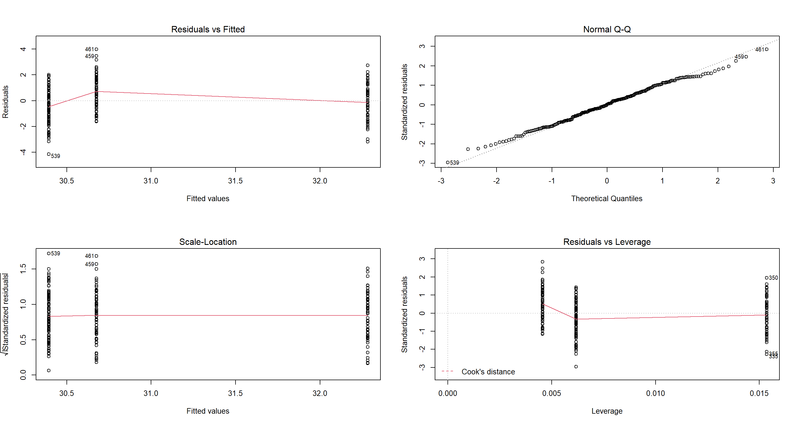 This looks sensible to me! The scatterplot shows that sparrows are lighter in warmer areas which makes sense to me.
summary(H1_ClimateTavg)
##
## Call:
## lm(formula = Weight ~ TAvg, data = CentralNorthAm_df)
##
## Residuals:
## Min 1Q Median 3Q Max
## -4.1440 -1.0861 0.0219 0.9823 3.9743
##
## Coefficients:
## Estimate Std. Error t value Pr(>|t|)
## (Intercept) 45.167990 1.618752 27.903 < 2e-16 ***
## TAvg -0.049501 0.005635 -8.785 2.63e-16 ***
## ---
## Signif. codes: 0 '***' 0.001 '**' 0.01 '*' 0.05 '.' 0.1 ' ' 1
##
## Residual standard error: 1.404 on 248 degrees of freedom
## Multiple R-squared: 0.2373, Adjusted R-squared: 0.2343
## F-statistic: 77.18 on 1 and 248 DF, p-value: 2.633e-16
Our model estimates show the same pattern.
Weight as a result of temperature variability (TSD)
I’ll continue with my North American, coastal subset here:
# everything west of -7° is on the Americas
# every that's coastal climate type is retained
# everything north of 11° is central and north America
CentralNorthAm_df <- Sparrows_df[Sparrows_df$Longitude < -7 & Sparrows_df$Climate == "Coastal" & Sparrows_df$Latitude > 11, ]
ggplot(data = CentralNorthAm_df, aes(y = Weight, x = TSD)) +
stat_smooth(method = "lm") +
geom_point() +
theme_bw()
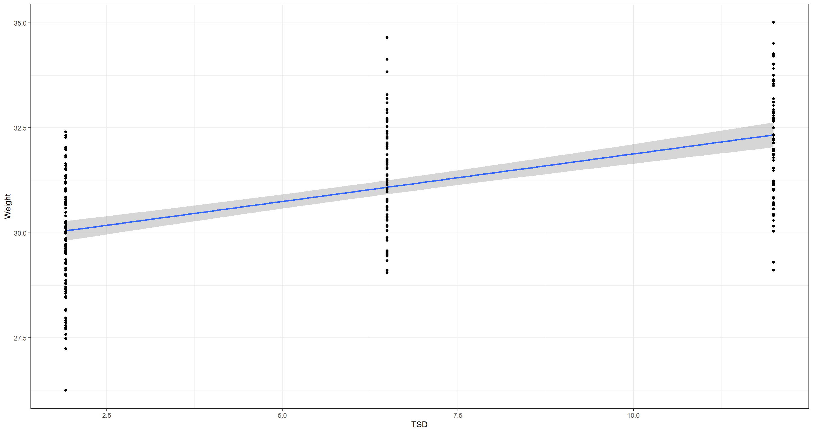
H1_ClimateTSD <- lm(Weight ~ TSD, data = CentralNorthAm_df)
par(mfrow = c(2, 2))
plot(H1_ClimateTSD)
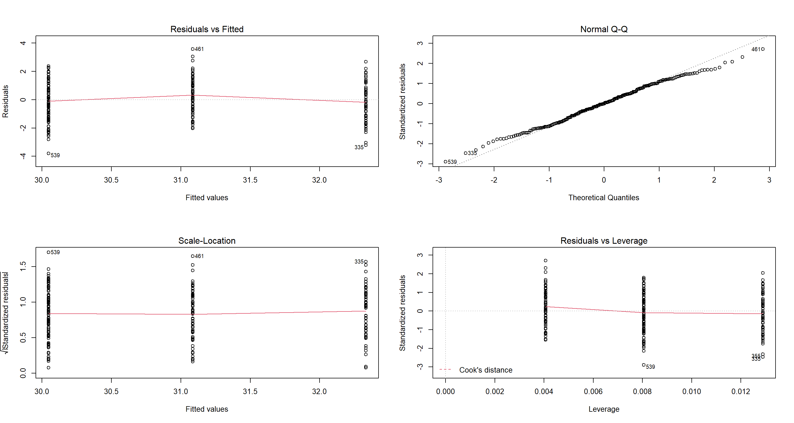
summary(H1_ClimateTSD)
##
## Call:
## lm(formula = Weight ~ TSD, data = CentralNorthAm_df)
##
## Residuals:
## Min 1Q Median 3Q Max
## -3.7978 -1.0053 0.0002 1.0042 3.5648
##
## Coefficients:
## Estimate Std. Error t value Pr(>|t|)
## (Intercept) 29.61266 0.14922 198.45 <2e-16 ***
## TSD 0.22680 0.02069 10.96 <2e-16 ***
## ---
## Signif. codes: 0 '***' 0.001 '**' 0.01 '*' 0.05 '.' 0.1 ' ' 1
##
## Residual standard error: 1.319 on 248 degrees of freedom
## Multiple R-squared: 0.3263, Adjusted R-squared: 0.3236
## F-statistic: 120.1 on 1 and 248 DF, p-value: < 2.2e-16
Again all assumptions are met and the model itself is very intuitive: The more variable the climate, the heavier the sparrows.
Weight as a result of both temperature mean (TAvg) and temperature variability (TSD)
Naturally, we continue with the same subset of the data as before:
# everything west of -7° is on the Americas
# every that's coastal climate type is retained
# everything north of 11° is central and north America
CentralNorthAm_df <- Sparrows_df[Sparrows_df$Longitude < -7 & Sparrows_df$Climate == "Coastal" & Sparrows_df$Latitude > 11, ]
H1_ClimateCont <- lm(Weight ~ TAvg + TSD, data = CentralNorthAm_df)
par(mfrow = c(2, 2))
plot(H1_ClimateCont)
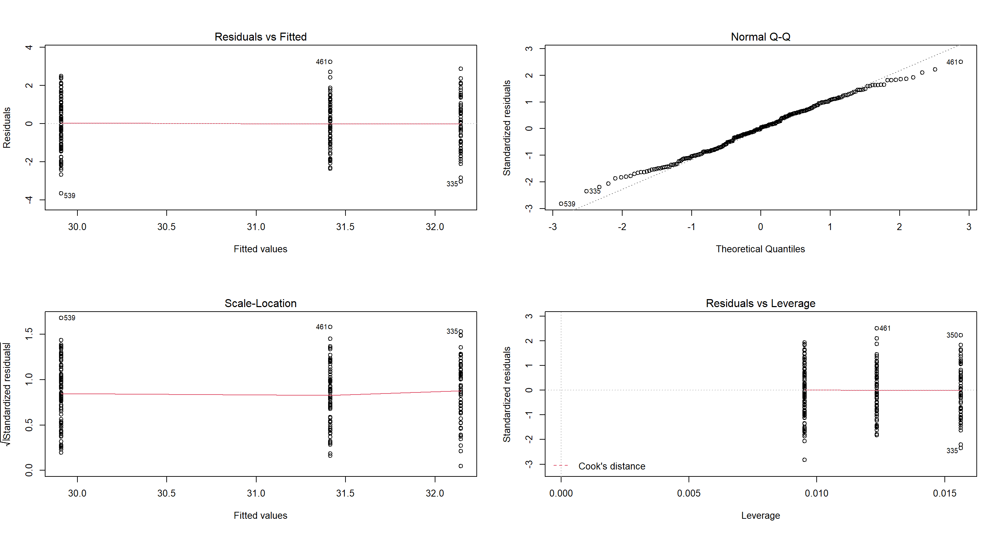
summary(H1_ClimateCont)
##
## Call:
## lm(formula = Weight ~ TAvg + TSD, data = CentralNorthAm_df)
##
## Residuals:
## Min 1Q Median 3Q Max
## -3.6593 -1.0263 0.0272 0.9207 3.2359
##
## Coefficients:
## Estimate Std. Error t value Pr(>|t|)
## (Intercept) 16.59866 4.68943 3.540 0.000479 ***
## TAvg 0.04215 0.01518 2.777 0.005915 **
## TSD 0.38142 0.05931 6.431 6.52e-10 ***
## ---
## Signif. codes: 0 '***' 0.001 '**' 0.01 '*' 0.05 '.' 0.1 ' ' 1
##
## Residual standard error: 1.302 on 247 degrees of freedom
## Multiple R-squared: 0.3467, Adjusted R-squared: 0.3414
## F-statistic: 65.54 on 2 and 247 DF, p-value: < 2.2e-16
Interestingly, average temperature has a different (and weaker) effect now than when investigated in isolation. Variability of temperature has become even more important (i.e. stronger effect). So which model should we use? That’s exactly what we’ll investigate in our session on Model Selection and Validation!
Competition
Next, we build models which aim to explain sparrow Weight through variables pertaining to competition. To do so, I first calculate the size for each flock at each site and append these to each bird:
FlockSizes <- with(Sparrows_df, table(Flock, Index))
Sparrows_df$Flock.Size <- NA
for (Flock_Iter in rownames(FlockSizes)) { # loop over flocks
for (Site_Iter in colnames(FlockSizes)) { # loop over sites
Positions <- Sparrows_df$Index == Site_Iter & Sparrows_df$Flock == Flock_Iter
Sparrows_df$Flock.Size[Positions] <- FlockSizes[Flock_Iter, Site_Iter]
}
}
With that done, we can now build our models up again like we did with the climate data before.
Weight as a result of Home Range size (Home.Range)
ggplot(data = Sparrows_df, aes(x = Home.Range, y = Weight)) +
geom_boxplot() +
theme_bw()
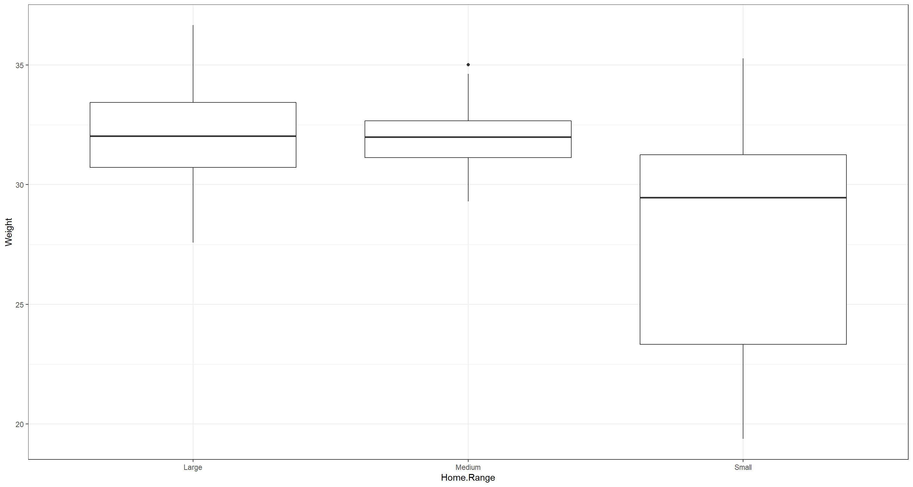
H1_CompetitionHR <- lm(Weight ~ Home.Range, data = Sparrows_df)
par(mfrow = c(2, 2))
plot(H1_CompetitionHR)
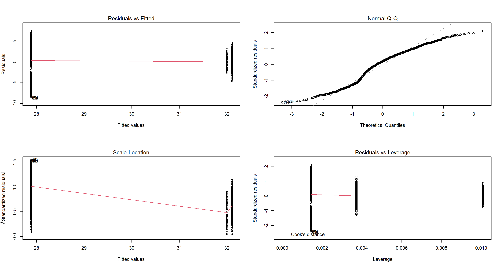 Nope. Those residuals have me nope out. We won’t use this model.
Weight as a result of Flock Size size (Flock.Size)
ggplot(data = Sparrows_df, aes(x = Flock.Size, y = Weight)) +
stat_smooth(method = "lm") +
geom_point() +
theme_bw()
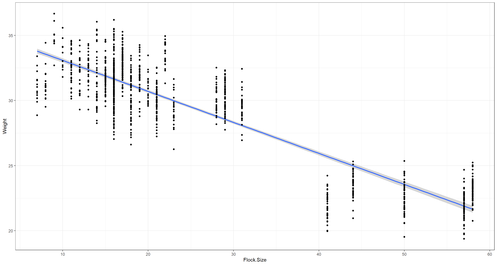
H1_CompetitionFS <- lm(Weight ~ Flock.Size, data = Sparrows_df)
par(mfrow = c(2, 2))
plot(H1_CompetitionFS)
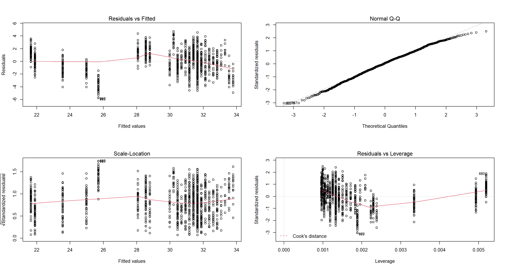
summary(H1_CompetitionFS)
##
## Call:
## lm(formula = Weight ~ Flock.Size, data = Sparrows_df)
##
## Residuals:
## Min 1Q Median 3Q Max
## -5.7421 -1.2163 0.0961 1.2823 4.7176
##
## Coefficients:
## Estimate Std. Error t value Pr(>|t|)
## (Intercept) 35.456378 0.114500 309.7 <2e-16 ***
## Flock.Size -0.237908 0.003831 -62.1 <2e-16 ***
## ---
## Signif. codes: 0 '***' 0.001 '**' 0.01 '*' 0.05 '.' 0.1 ' ' 1
##
## Residual standard error: 1.893 on 1064 degrees of freedom
## Multiple R-squared: 0.7838, Adjusted R-squared: 0.7836
## F-statistic: 3857 on 1 and 1064 DF, p-value: < 2.2e-16
Now that’s a neat model! Not only do the diagnostics plot look spot-on (not showing these here), the relationship is strong and clear to see - the bigger the flock, the lighter the sparrow.
Weight as a result of Home Range size (Home.Range) and Flock Size size (Flock.Size)
ggplot(data = Sparrows_df, aes(x = Flock.Size, y = Weight, col = Home.Range)) +
geom_point() +
stat_smooth(method = "lm") +
theme_bw()
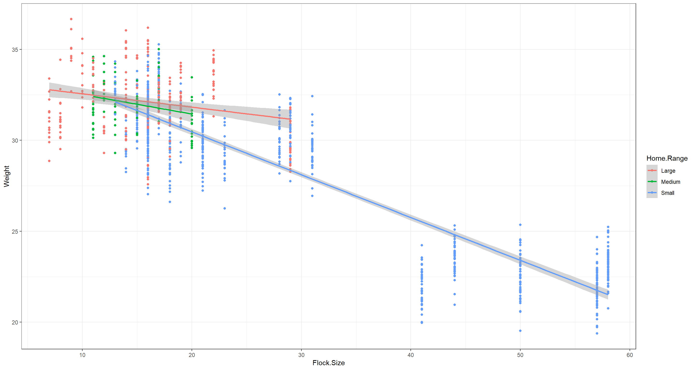
H1_CompetitionFULL <- lm(Weight ~ Home.Range * Flock.Size, data = Sparrows_df)
par(mfrow = c(2, 2))
plot(H1_CompetitionFULL)
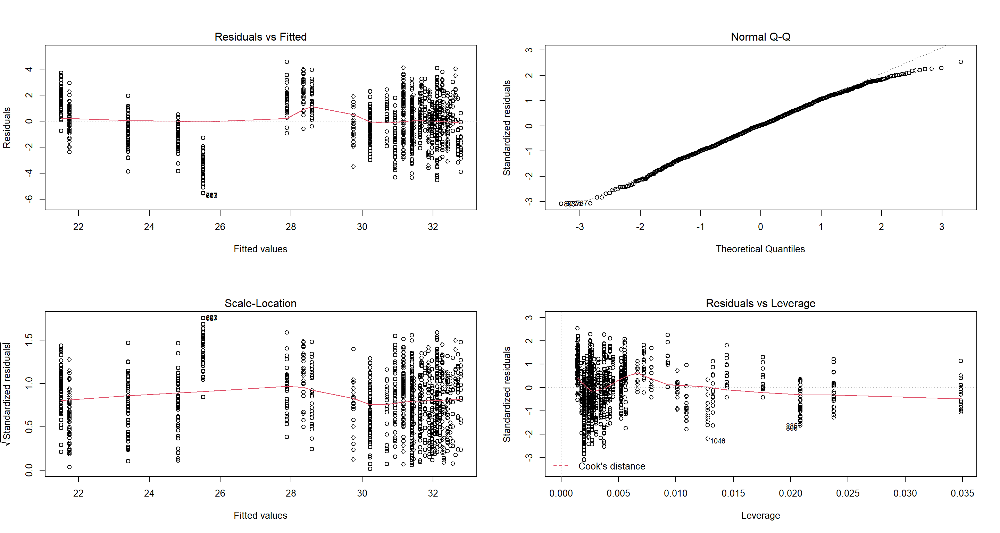
summary(H1_CompetitionFULL)
##
## Call:
## lm(formula = Weight ~ Home.Range * Flock.Size, data = Sparrows_df)
##
## Residuals:
## Min 1Q Median 3Q Max
## -5.5599 -1.2261 0.0427 1.2806 4.5553
##
## Coefficients:
## Estimate Std. Error t value Pr(>|t|)
## (Intercept) 33.29279 0.31986 104.086 < 2e-16 ***
## Home.RangeMedium 0.29700 0.89288 0.333 0.739
## Home.RangeSmall 1.88176 0.35265 5.336 1.16e-07 ***
## Flock.Size -0.07337 0.01848 -3.970 7.66e-05 ***
## Home.RangeMedium:Flock.Size -0.03363 0.05787 -0.581 0.561
## Home.RangeSmall:Flock.Size -0.16211 0.01896 -8.548 < 2e-16 ***
## ---
## Signif. codes: 0 '***' 0.001 '**' 0.01 '*' 0.05 '.' 0.1 ' ' 1
##
## Residual standard error: 1.8 on 1060 degrees of freedom
## Multiple R-squared: 0.8051, Adjusted R-squared: 0.8042
## F-statistic: 876 on 5 and 1060 DF, p-value: < 2.2e-16
We see that our model is unsure of what to do with the home ranges when it comes to medium-sized ranges. The scatterplot shows that is is probably due to us not having a lot of samples for medium-sized home-ranges. Aside from that, our model meets all assumptions and produces quite intuitive parameter estimates.
Predation
Next, we look at sparrow Weight through the lens of predation. To do so, we need to recode all NAs in the Predator.Type variable into something else for our models ro tun properly. I chose "None" here to indicate that there is no predation-pressure at these sites:
levels(Sparrows_df$Predator.Type) <- c(levels(Sparrows_df$Predator.Type), "None")
Sparrows_df$Predator.Type[is.na(Sparrows_df$Predator.Type)] <- "None"
With that taken care of, we again build our models one-by-one.
Again, because of issues with normality of residuals, we default to our three sites across Central and North America, which are of coastal climate:
# everything west of -7° is on the Americas
# every that's coastal climate type is retained
# everything north of 11° is central and north America
CentralNorthAm_df <- Sparrows_df[Sparrows_df$Longitude < -7 & Sparrows_df$Climate == "Coastal" & Sparrows_df$Latitude > 11, ]
Weight as a result of Predator.Presence
ggplot(data = CentralNorthAm_df, aes(x = Predator.Presence, y = Weight)) +
geom_boxplot() +
theme_bw()
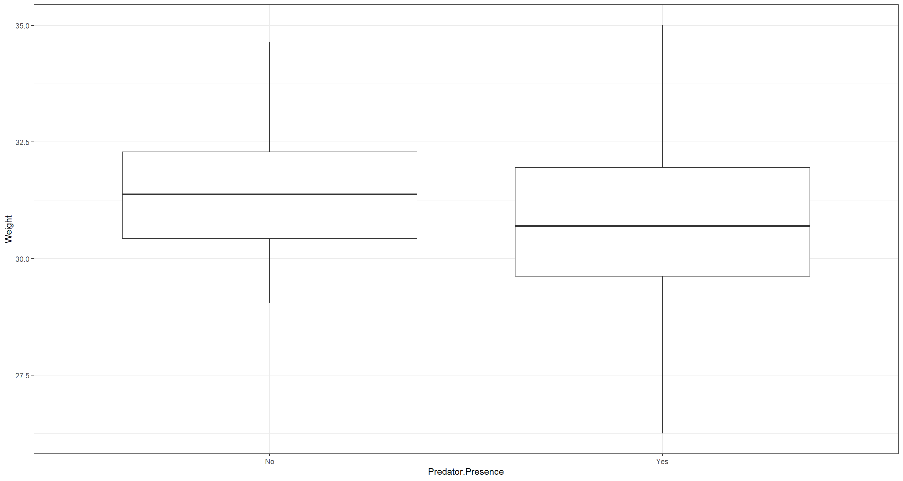
H1_PredationPresence <- lm(Weight ~ Predator.Presence, data = CentralNorthAm_df)
par(mfrow = c(2, 2))
plot(H1_PredationPresence)
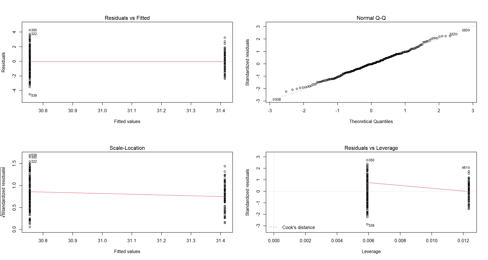
summary(H1_PredationPresence)
##
## Call:
## lm(formula = Weight ~ Predator.Presence, data = CentralNorthAm_df)
##
## Residuals:
## Min 1Q Median 3Q Max
## -4.5051 -1.0701 -0.0396 1.0749 4.2549
##
## Coefficients:
## Estimate Std. Error t value Pr(>|t|)
## (Intercept) 31.4141 0.1752 179.261 < 2e-16 ***
## Predator.PresenceYes -0.6589 0.2131 -3.092 0.00222 **
## ---
## Signif. codes: 0 '***' 0.001 '**' 0.01 '*' 0.05 '.' 0.1 ' ' 1
##
## Residual standard error: 1.577 on 248 degrees of freedom
## Multiple R-squared: 0.03711, Adjusted R-squared: 0.03323
## F-statistic: 9.557 on 1 and 248 DF, p-value: 0.002219
According to our model, sparrows under pressure of predation are lighter than those which aren’t. Does that make sense? Intuitively, yes, but I would argue that there are too many confounding variable here to be sure.
Weight as a result of Predator.Type
ggplot(data = CentralNorthAm_df, aes(x = Predator.Type, y = Weight)) +
geom_boxplot() +
theme_bw()
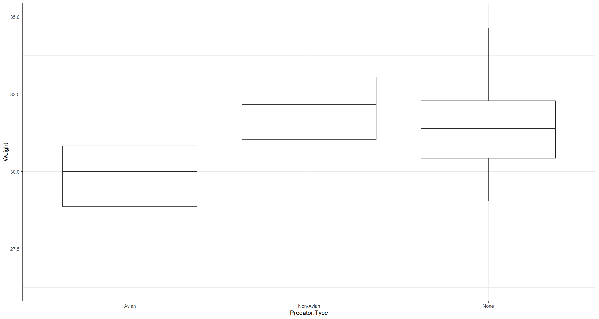
H1_PredationType <- lm(Weight ~ Predator.Type, data = CentralNorthAm_df)
par(mfrow = c(2, 2))
plot(H1_PredationType)

summary(H1_PredationType)
##
## Call:
## lm(formula = Weight ~ Predator.Type, data = CentralNorthAm_df)
##
## Residuals:
## Min 1Q Median 3Q Max
## -3.6593 -1.0263 0.0272 0.9207 3.2359
##
## Coefficients:
## Estimate Std. Error t value Pr(>|t|)
## (Intercept) 29.9093 0.1270 235.439 < 2e-16 ***
## Predator.TypeNon-Avian 2.2335 0.2064 10.819 < 2e-16 ***
## Predator.TypeNone 1.5047 0.1925 7.817 1.56e-13 ***
## ---
## Signif. codes: 0 '***' 0.001 '**' 0.01 '*' 0.05 '.' 0.1 ' ' 1
##
## Residual standard error: 1.302 on 247 degrees of freedom
## Multiple R-squared: 0.3467, Adjusted R-squared: 0.3414
## F-statistic: 65.54 on 2 and 247 DF, p-value: < 2.2e-16
OK. This clearly shows that there are either some confounds present or that our data shows something very counter-intuitive. Sparrows under nor predation are lighter than sparrows under non-avian predation? That makes no sense to me.
Weight as a result of Predator.Presence and Predator.Type
ggplot(data = CentralNorthAm_df, aes(x = Predator.Presence, y = Weight, fill = Predator.Type)) +
geom_boxplot() +
theme_bw()
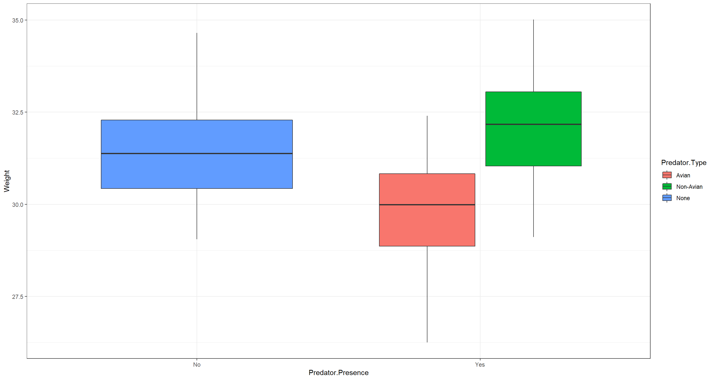
H1_PredationFULL <- lm(Weight ~ Predator.Presence + Predator.Type, data = Sparrows_df)
par(mfrow = c(2, 2))
plot(H1_PredationFULL)
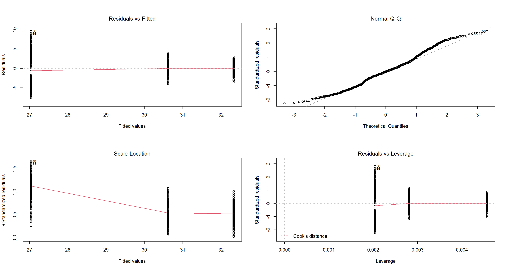
summary(H1_PredationFULL)
##
## Call:
## lm(formula = Weight ~ Predator.Presence + Predator.Type, data = Sparrows_df)
##
## Residuals:
## Min 1Q Median 3Q Max
## -7.6635 -2.2987 -0.0844 1.9563 9.6165
##
## Coefficients: (1 not defined because of singularities)
## Estimate Std. Error t value Pr(>|t|)
## (Intercept) 30.6145 0.1816 168.60 <2e-16 ***
## Predator.PresenceYes -3.5709 0.2387 -14.96 <2e-16 ***
## Predator.TypeNon-Avian 5.2809 0.2789 18.94 <2e-16 ***
## Predator.TypeNone NA NA NA NA
## ---
## Signif. codes: 0 '***' 0.001 '**' 0.01 '*' 0.05 '.' 0.1 ' ' 1
##
## Residual standard error: 3.431 on 1063 degrees of freedom
## Multiple R-squared: 0.2901, Adjusted R-squared: 0.2888
## F-statistic: 217.2 on 2 and 1063 DF, p-value: < 2.2e-16
Those residuals don’t look good, but that’s not what I am after with this model. Immediately, we should notice that our model returns NA for the parameter estimate of Predator.TypeNone. Why does that happen? Because Predator.TypeNone coincides with Predator.PresenceNo (the Intercept) of this model and so does not provide any additional information. In fact, Predator.Type offers all the information of Predator.Presence and then some! Consequently, including both in a model does not make sense and we can immediately disqualify this model.
Null & Full Model
For some comparison further down the line, we need a null model:
H1_Null_Sparrows <- lm(Weight ~ 1, data = Sparrows_df)
H1_Null_CNA <- lm(Weight ~ 1, data = CentralNorthAm_df)
Our full model contains all of our aforementioned variables/parameters to the best of our knowledge/intuition at this point. We will get to making this model better later. Don’t worry:
H1_FULL_Sparrows <- lm(Weight ~ Climate + TAvg + TSD + Home.Range * Flock.Size + Predator.Type, data = Sparrows_df)
par(mfrow = c(2, 2))
plot(H1_FULL_Sparrows)
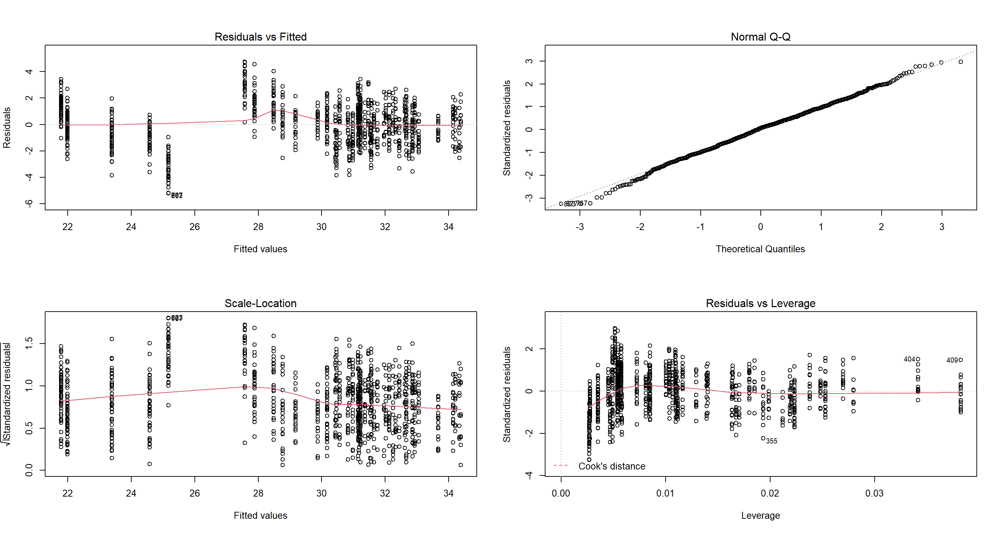
summary(H1_FULL_Sparrows)
##
## Call:
## lm(formula = Weight ~ Climate + TAvg + TSD + Home.Range * Flock.Size +
## Predator.Type, data = Sparrows_df)
##
## Residuals:
## Min 1Q Median 3Q Max
## -5.2164 -1.0436 0.0939 1.0495 4.7403
##
## Coefficients:
## Estimate Std. Error t value Pr(>|t|)
## (Intercept) 43.65271 4.09482 10.660 < 2e-16 ***
## ClimateContinental 2.28851 0.31524 7.259 7.53e-13 ***
## ClimateSemi-Coastal -0.79097 0.30663 -2.580 0.01003 *
## TAvg -0.04252 0.01402 -3.034 0.00247 **
## TSD 0.01431 0.04032 0.355 0.72272
## Home.RangeMedium 1.63110 0.85370 1.911 0.05632 .
## Home.RangeSmall 2.36146 0.41639 5.671 1.83e-08 ***
## Flock.Size -0.03445 0.01896 -1.817 0.06955 .
## Predator.TypeNon-Avian 0.24253 0.16673 1.455 0.14605
## Predator.TypeNone 0.75123 0.17268 4.350 1.49e-05 ***
## Home.RangeMedium:Flock.Size -0.10115 0.05614 -1.802 0.07186 .
## Home.RangeSmall:Flock.Size -0.16452 0.01990 -8.267 4.09e-16 ***
## ---
## Signif. codes: 0 '***' 0.001 '**' 0.01 '*' 0.05 '.' 0.1 ' ' 1
##
## Residual standard error: 1.605 on 1054 degrees of freedom
## Multiple R-squared: 0.846, Adjusted R-squared: 0.8444
## F-statistic: 526.6 on 11 and 1054 DF, p-value: < 2.2e-16
Already at this point, it is interesting to point out how some previously non-significant effects drop out while other become significant due to the inclusion of all parameters in one model.
Now we also need a full model for our Central-/North-America data:
H1_FULL_CNA <- lm(Weight ~ TAvg + TSD + Home.Range * Flock.Size + Predator.Type, data = CentralNorthAm_df)
par(mfrow = c(2, 2))
plot(H1_FULL_CNA)
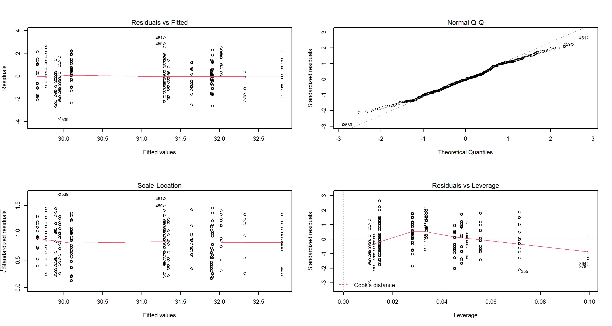
summary(H1_FULL_CNA)
##
## Call:
## lm(formula = Weight ~ TAvg + TSD + Home.Range * Flock.Size +
## Predator.Type, data = CentralNorthAm_df)
##
## Residuals:
## Min 1Q Median 3Q Max
## -3.6979 -0.9364 -0.0501 1.0483 3.3590
##
## Coefficients: (2 not defined because of singularities)
## Estimate Std. Error t value Pr(>|t|)
## (Intercept) 14.18473 6.20215 2.287 0.0231 *
## TAvg 0.05336 0.02038 2.618 0.0094 **
## TSD 0.39853 0.07842 5.082 7.48e-07 ***
## Home.RangeMedium -3.83588 1.99164 -1.926 0.0553 .
## Home.RangeSmall -1.50681 1.03368 -1.458 0.1462
## Flock.Size -0.07581 0.05850 -1.296 0.1963
## Predator.TypeNon-Avian NA NA NA NA
## Predator.TypeNone NA NA NA NA
## Home.RangeMedium:Flock.Size 0.29821 0.13273 2.247 0.0256 *
## Home.RangeSmall:Flock.Size 0.10097 0.06212 1.625 0.1054
## ---
## Signif. codes: 0 '***' 0.001 '**' 0.01 '*' 0.05 '.' 0.1 ' ' 1
##
## Residual standard error: 1.285 on 242 degrees of freedom
## Multiple R-squared: 0.3765, Adjusted R-squared: 0.3585
## F-statistic: 20.88 on 7 and 242 DF, p-value: < 2.2e-16
Summary of Linear Regression
To streamline the next few steps of our exercise on Model Selection and Validation, we combine all of our models into a list object for now:
H1_ModelSparrows_ls <- list(
H1_Null_Sparrows,
H1_CompetitionFS,
H1_CompetitionFULL,
H1_FULL_Sparrows
)
names(H1_ModelSparrows_ls) <- c(
"Null",
"Comp_Flock.Size", "Comp_Full",
"Full"
)
H1_ModelCNA_ls <- list(
H1_Null_CNA,
H1_ClimateTavg,
H1_ClimateTSD,
H1_ClimateCont,
H1_PredationPresence,
H1_PredationType,
H1_FULL_CNA
)
names(H1_ModelCNA_ls) <- c(
"Null",
"Clim_TAvg", "Clim_TSD", "Clim_Full",
"Pred_Pres", "Pred_Type",
"Full"
)
Mixed Effect Models
Remember the Assumptions of Mixed Effect Models:
- Variable values follow homoscedasticity (equal variance across entire data range)
- Residuals follow normal distribution (normality)
- Absence of influential outliers
- Response and Predictor are related in a linear fashion
Climate Conditions
Here, I create a mixed effect model that is accounting predicting Weight with a combination TAvg and TSD while accounting for random intercepts of Index and Population.Status. As we learned in our exercise on Classifications, these two are probably important in controlling for some morphology effects in Weight.
I create such a model for:
- The entire sparrow data data set
- Only the Central-/North-America sparrows
to make models comparable to our previous basic, linear models.
Global Model
H1_Climate_ME_Sparrows <- lme(Weight ~ TAvg + TSD,
random = list(
Population.Status = ~1,
Index = ~1
),
data = Sparrows_df
)
par(mfrow = c(2, 2))
plot(fitted(H1_Climate_ME_Sparrows), resid(H1_Climate_ME_Sparrows)) # Homogeneity of Variances, values around 0, no pattern --> good!
plot(fitted(H1_Climate_ME_Sparrows), Sparrows_df$Weight) # Linearity, there is a clear pattern here --> bad!
qqnorm(resid(H1_Climate_ME_Sparrows)) # Normality, residuals are normal distributed -> good!
hist(leverage(H1_Climate_ME_Sparrows)[, 1]) # Leverage, not really any outliers --> good!
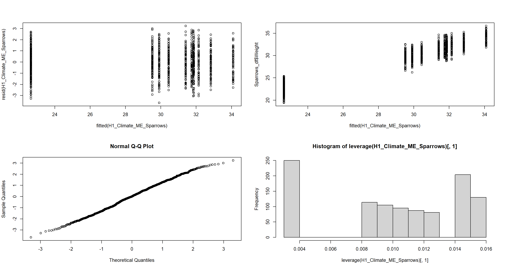 Quite evidently, the assumption of linearity is violated. Notice that we would not like to use this model for predictions, but will carry it forward for the purpose of subsequent Model Selection and Validation.
summary(H1_Climate_ME_Sparrows)
## Linear mixed-effects model fit by REML
## Data: Sparrows_df
## AIC BIC logLik
## 3557.109 3586.922 -1772.554
##
## Random effects:
## Formula: ~1 | Population.Status
## (Intercept)
## StdDev: 0.001507855
##
## Formula: ~1 | Index %in% Population.Status
## (Intercept) Residual
## StdDev: 2.640311 1.237155
##
## Fixed effects: Weight ~ TAvg + TSD
## Value Std.Error DF t-value p-value
## (Intercept) 37.83099 31.229059 1055 1.2114034 0.2260
## TAvg -0.03070 0.104602 7 -0.2934692 0.7777
## TSD 0.27536 0.265143 7 1.0385452 0.3336
## Correlation:
## (Intr) TAvg
## TAvg -0.999
## TSD -0.826 0.809
##
## Standardized Within-Group Residuals:
## Min Q1 Med Q3 Max
## -2.956660984 -0.746001839 0.004452834 0.722973350 2.617329146
##
## Number of Observations: 1066
## Number of Groups:
## Population.Status Index %in% Population.Status
## 2 11
Central-/North-American Model
Accounting for population status in among the Central-/North-American sites makes no sense as all of them are introduced populations.
H1_Climate_ME_CNA <- lme(Weight ~ TAvg + TSD,
random = list(Index = ~1),
data = CentralNorthAm_df
)
par(mfrow = c(2, 2))
plot(fitted(H1_Climate_ME_CNA), resid(H1_Climate_ME_CNA)) # Homogeneity of Variances, values around 0, no pattern --> good!
plot(fitted(H1_Climate_ME_CNA), CentralNorthAm_df$Weight) # Linearity, there is no clear pattern here --> good!
qqnorm(resid(H1_Climate_ME_CNA)) # Normality, residuals are normal distributed -> good!
hist(leverage(H1_Climate_ME_CNA)[, 1]) # Leverage, not really any outliers --> good!
With this model, all of our assumption are met nicely!
summary(H1_Climate_ME_CNA)
## Linear mixed-effects model fit by REML
## Data: CentralNorthAm_df
## AIC BIC logLik
## 863.9566 881.5035 -426.9783
##
## Random effects:
## Formula: ~1 | Index
## (Intercept) Residual
## StdDev: 0.3802608 1.301734
##
## Fixed effects: Weight ~ TAvg + TSD
## Value Std.Error DF t-value p-value
## (Intercept) 16.598661 13.291655 247 1.2488031 0.2129
## TAvg 0.042146 0.042863 0 0.9832757 NaN
## TSD 0.381424 0.174011 0 2.1919464 NaN
## Correlation:
## (Intr) TAvg
## TAvg -0.999
## TSD -0.953 0.945
##
## Standardized Within-Group Residuals:
## Min Q1 Med Q3 Max
## -2.8111222 -0.7883782 0.0208856 0.7072618 2.4858581
##
## Number of Observations: 250
## Number of Groups: 3
Competition
With competition effects as my goal, I can now include climate classification as one of the random effects! Of course, this is with the exception of the Central-/North-American data as all of these sites are of the type “Coastal”.
Again, we do so for a global and a local model:
Global Model
H1_Comp_ME_Sparrows <- lme(Weight ~ Home.Range * Flock.Size,
random = list(
Population.Status = ~1,
Climate = ~1
),
data = Sparrows_df
)
par(mfrow = c(2, 2))
plot(fitted(H1_Comp_ME_Sparrows), resid(H1_Comp_ME_Sparrows)) # Homogeneity of Variances, values around 0, no pattern --> good!
plot(fitted(H1_Comp_ME_Sparrows), Sparrows_df$Weight) # Linearity, there is a clear pattern here --> bad!
qqnorm(resid(H1_Comp_ME_Sparrows)) # Normality, residuals are normal distributed -> good!
hist(leverage(H1_Comp_ME_Sparrows)[, 1]) # Leverage, not really any outliers --> good!
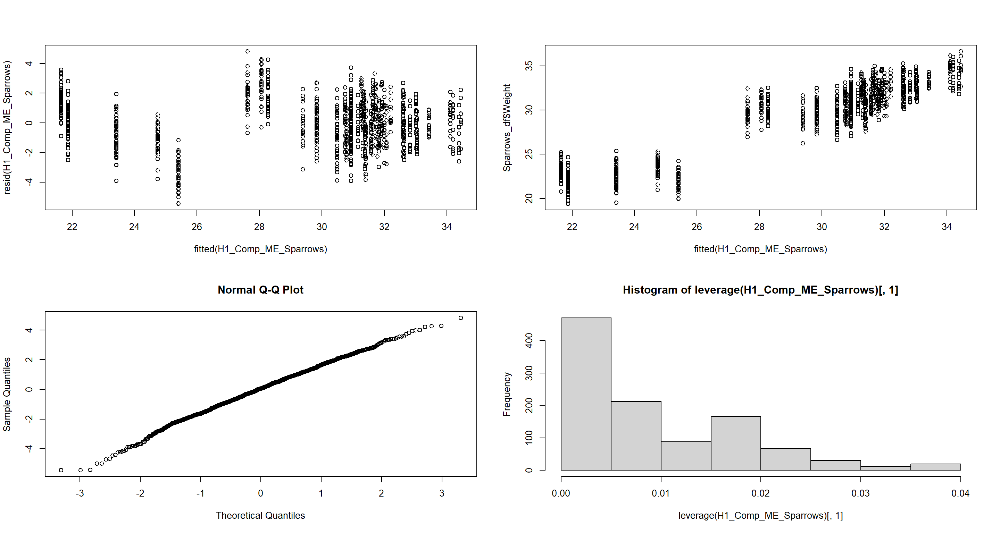
Central-/North-American Model
H1_Comp_ME_CNA <- lme(Weight ~ Home.Range * Flock.Size,
random = list(Climate = ~1),
data = CentralNorthAm_df
)
par(mfrow = c(2, 2))
plot(fitted(H1_Comp_ME_CNA), resid(H1_Comp_ME_CNA)) # Homogeneity of Variances, values around 0, no pattern --> good!
plot(fitted(H1_Comp_ME_CNA), CentralNorthAm_df$Weight) # Linearity, there is no clear pattern here --> good!
qqnorm(resid(H1_Comp_ME_CNA)) # Normality, residuals are normal distributed -> good!
hist(leverage(H1_Comp_ME_CNA)[, 1]) # Leverage, not really any outliers --> good!
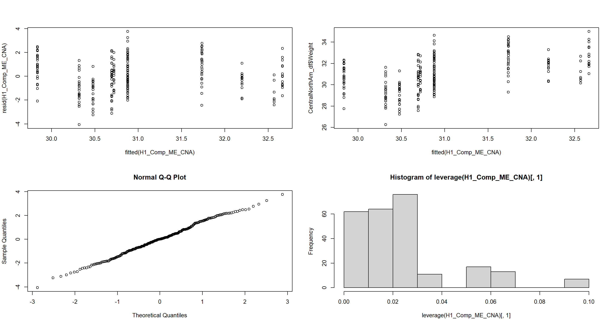
Predation
With predation effects, I do the same as with competition effects and set a random intercept for climate classification at each site for a global and a local model:
Global Model
H1_Pred_ME_Sparrows <- lme(Weight ~ Predator.Type,
random = list(
Population.Status = ~1,
Climate = ~1
),
data = Sparrows_df
)
par(mfrow = c(2, 2))
plot(fitted(H1_Pred_ME_Sparrows), resid(H1_Pred_ME_Sparrows)) # Homogeneity of Variances, values around 0, no pattern --> good!
plot(fitted(H1_Pred_ME_Sparrows), Sparrows_df$Weight) # Linearity, there is a clear pattern here --> bad!
qqnorm(resid(H1_Pred_ME_Sparrows)) # Normality, residuals are normal distributed -> good!
hist(leverage(H1_Pred_ME_Sparrows)[, 1]) # Leverage, not really any outliers --> good!
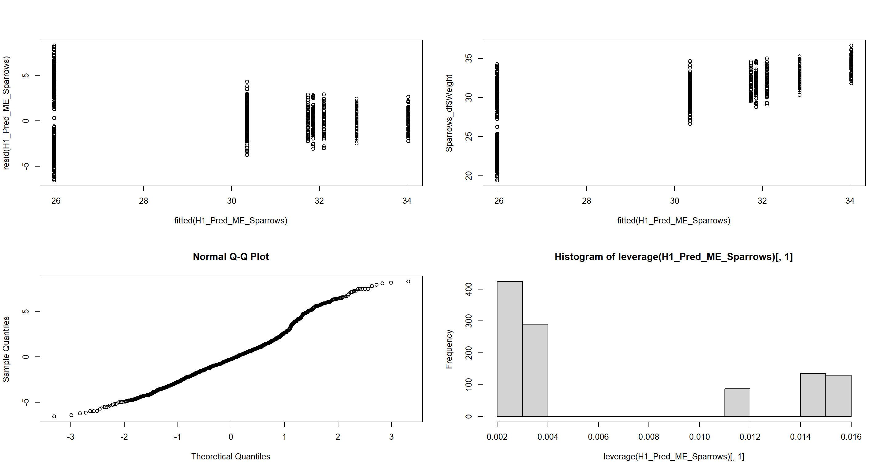
Central-/North-American Model
H1_Pred_ME_CNA <- lme(Weight ~ Predator.Type,
random = list(Index = ~1),
data = CentralNorthAm_df
)
par(mfrow = c(2, 2))
plot(fitted(H1_Pred_ME_CNA), resid(H1_Pred_ME_CNA)) # Homogeneity of Variances, values around 0, no pattern --> good!
plot(fitted(H1_Pred_ME_CNA), CentralNorthAm_df$Weight) # Linearity, there is no clear pattern here --> good!
qqnorm(resid(H1_Pred_ME_CNA)) # Normality, residuals are normal distributed -> good!
hist(leverage(H1_Pred_ME_CNA)[, 1]) # Leverage, not really any outliers --> good!
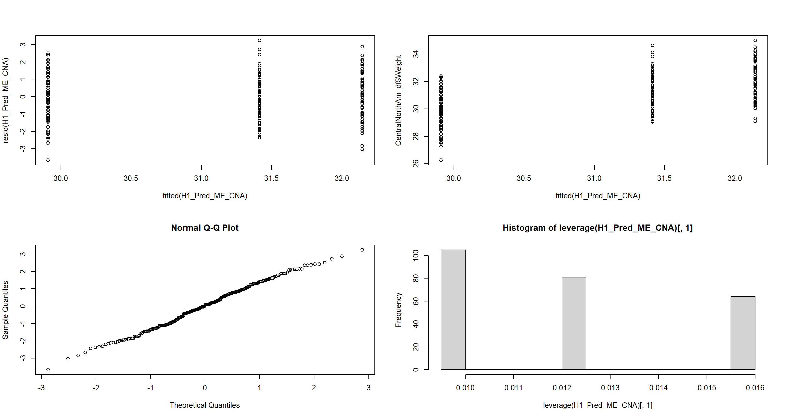
Full Model
Global Model
H1_Full_ME_Sparrows <- lme(Weight ~ Predator.Type + Flock.Size * Home.Range + TAvg + TSD,
random = list(Population.Status = ~1),
data = Sparrows_df
)
par(mfrow = c(2, 2))
plot(fitted(H1_Full_ME_Sparrows), resid(H1_Full_ME_Sparrows)) # Homogeneity of Variances, values around 0, no pattern --> good!
plot(fitted(H1_Full_ME_Sparrows), Sparrows_df$Weight) # Linearity, there is a clear pattern here --> bad!
qqnorm(resid(H1_Full_ME_Sparrows)) # Normality, residuals are normal distributed -> good!
hist(leverage(H1_Full_ME_Sparrows)[, 1]) # Leverage, not really any outliers --> good!
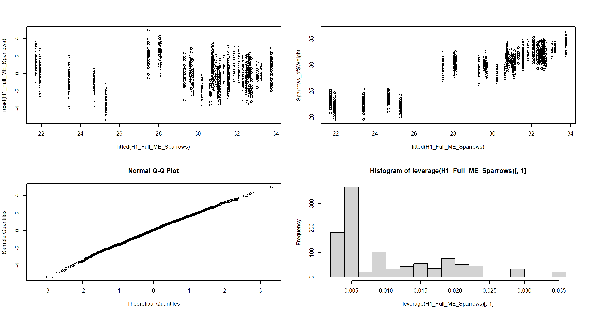
Central-/North-American Model
H1_Full_ME_CNA <- lme(Weight ~ Flock.Size * Home.Range + TAvg + TSD,
random = list(Index = ~1),
data = CentralNorthAm_df
)
par(mfrow = c(2, 2))
plot(fitted(H1_Full_ME_CNA), resid(H1_Full_ME_CNA)) # Homogeneity of Variances, values around 0, no pattern --> good!
plot(fitted(H1_Full_ME_CNA), CentralNorthAm_df$Weight) # Linearity, there is no clear pattern here --> good!
qqnorm(resid(H1_Full_ME_CNA)) # Normality, residuals are normal distributed -> good!
hist(leverage(H1_Full_ME_CNA)[, 1]) # Leverage, not really any outliers --> good!
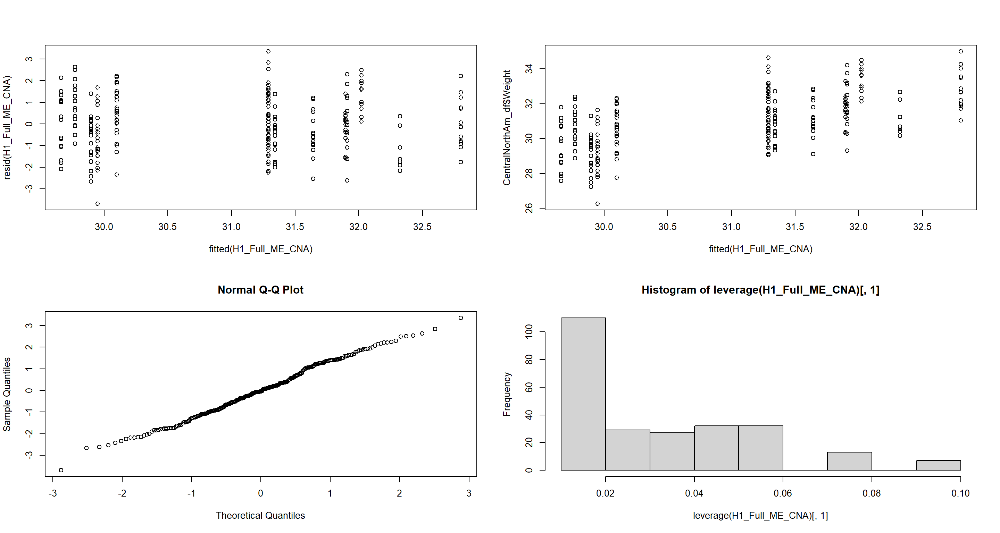
Summary of Mixed Effect Models
Mixed effect models are hard and I have certainly not given them full credit for what they are worth here. I highly suggest giving this a read if you see yourself using mixed effect models.
For now, I want to carry along only the full models for our session on Model Selection and Validation:
H1_ModelSparrows_ls$Mixed_Full <- H1_Full_ME_Sparrows
H1_ModelCNA_ls$Mixed_Full <- H1_Full_ME_CNA
Generalised Linear Models
For a generalised linear model, we may want to run a logistic regression, which we already did.
For a different example, we now turn to poisson models by trying to understand how Flock.Size comes about.
Firstly, we limit our data set to necessary variables and then cut all duplicate rows:
Flock_df <- Sparrows_df[, c("Flock.Size", "TAvg", "TSD", "Index", "Climate", "Predator.Type")]
Flock_df <- unique(Flock_df)
Now we are ready to build a basic linear model:
Flock_lm <- lm(Flock.Size ~ TAvg * TSD * Predator.Type, data = Flock_df)
par(mfrow = c(2, 2))
plot(Flock_lm)
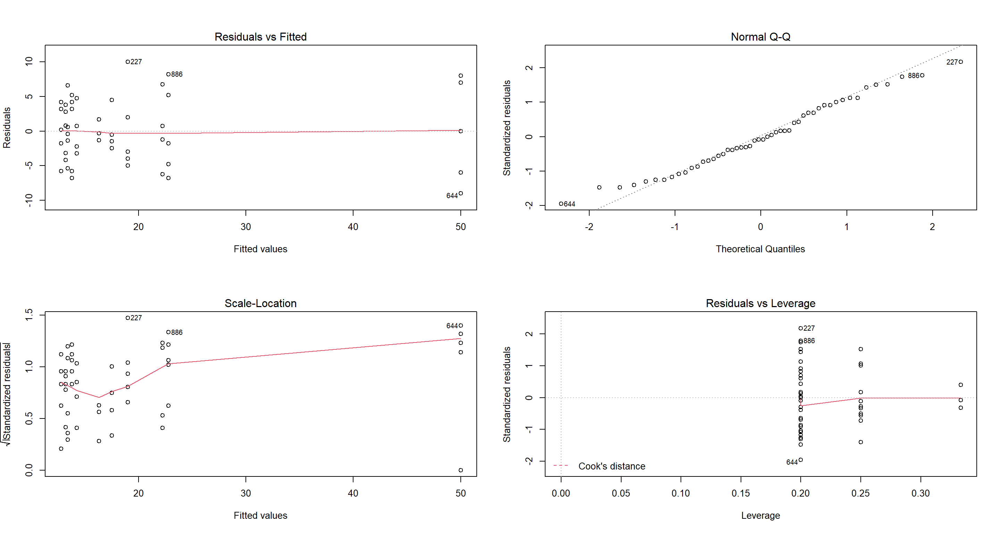
Everything looks line but that Scale-Location plot. That one seems to indicate that variance in our Flock.Size increases as the Flock.Size itself increases - a very typical example of a poisson distributed variable.
GLMs to the rescue with the poisson GLM:
poisson.model <- glm(Flock.Size ~ TAvg * TSD * Predator.Type, data = Flock_df, family = poisson(link = "log"))
par(mfrow = c(2, 2))
plot(poisson.model)
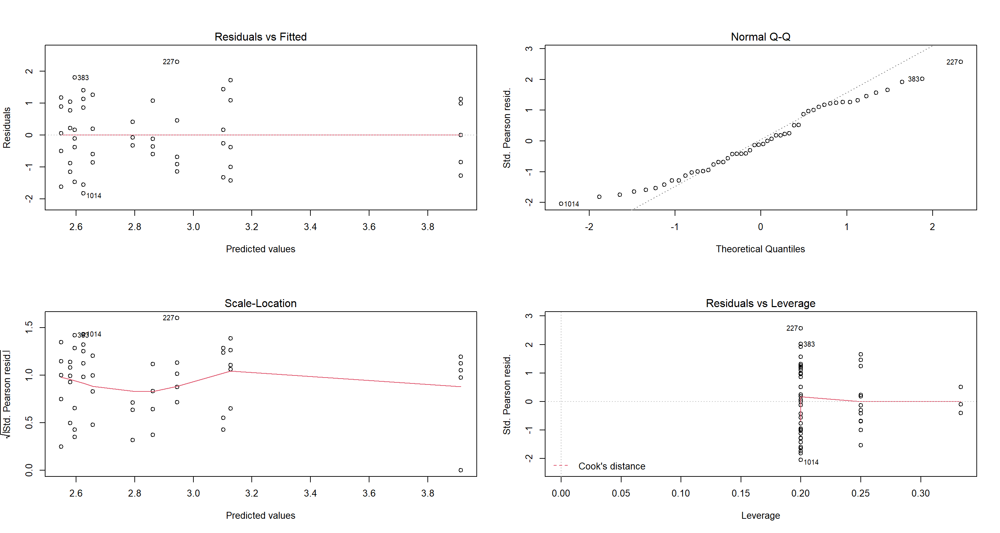 We fixed it! Now just for the parameter estimates:
summary(poisson.model)
##
## Call:
## glm(formula = Flock.Size ~ TAvg * TSD * Predator.Type, family = poisson(link = "log"),
## data = Flock_df)
##
## Deviance Residuals:
## Min 1Q Median 3Q Max
## -2.02420 -0.88953 -0.09629 0.94122 2.12737
##
## Coefficients: (1 not defined because of singularities)
## Estimate Std. Error z value Pr(>|z|)
## (Intercept) -13.822674 2.540369 -5.441 5.29e-08 ***
## TAvg 0.061744 0.008564 7.209 5.62e-13 ***
## TSD 7.243621 1.056843 6.854 7.18e-12 ***
## Predator.TypeNon-Avian -48.160439 9.412905 -5.116 3.11e-07 ***
## Predator.TypeNone 10.338971 8.694652 1.189 0.234
## TAvg:TSD -0.026895 0.003936 -6.833 8.34e-12 ***
## TAvg:Predator.TypeNon-Avian 0.171883 0.033327 5.157 2.50e-07 ***
## TAvg:Predator.TypeNone -0.039510 0.029180 -1.354 0.176
## TSD:Predator.TypeNon-Avian 0.067442 0.041609 1.621 0.105
## TSD:Predator.TypeNone -6.742437 1.177538 -5.726 1.03e-08 ***
## TAvg:TSD:Predator.TypeNon-Avian NA NA NA NA
## TAvg:TSD:Predator.TypeNone 0.025061 0.004321 5.800 6.64e-09 ***
## ---
## Signif. codes: 0 '***' 0.001 '**' 0.01 '*' 0.05 '.' 0.1 ' ' 1
##
## (Dispersion parameter for poisson family taken to be 1)
##
## Null deviance: 276.538 on 49 degrees of freedom
## Residual deviance: 53.417 on 39 degrees of freedom
## AIC: 310.71
##
## Number of Fisher Scoring iterations: 4
Final Models
In our upcoming Model Selection and Validation Session, we will look into how to compare and validate models. We now need to select some models we have created here today and want to carry forward to said session.
We have already created list objects for this purpose. Let’s save them alongside the data that was used to create them (in the case of the localised models, at least). Let’s save these as a separate object ready to be loaded into our R environment in the coming session:
save(H1_ModelSparrows_ls, H1_ModelCNA_ls, CentralNorthAm_df, Sparrows_df, file = file.path("Data", "H1_Models.RData"))
SessionInfo
sessionInfo()
## R version 4.2.3 (2023-03-15)
## Platform: x86_64-apple-darwin17.0 (64-bit)
## Running under: macOS Big Sur ... 10.16
##
## Matrix products: default
## BLAS: /Library/Frameworks/R.framework/Versions/4.2/Resources/lib/libRblas.0.dylib
## LAPACK: /Library/Frameworks/R.framework/Versions/4.2/Resources/lib/libRlapack.dylib
##
## locale:
## [1] en_US.UTF-8/en_US.UTF-8/en_US.UTF-8/C/en_US.UTF-8/en_US.UTF-8
##
## attached base packages:
## [1] stats graphics grDevices utils datasets methods base
##
## other attached packages:
## [1] HLMdiag_0.5.0 nlme_3.1-162 ggplot2_3.4.1
##
## loaded via a namespace (and not attached):
## [1] styler_1.9.1 tidyselect_1.2.0 xfun_0.37 bslib_0.4.2 janitor_2.2.0 reshape2_1.4.4 purrr_1.0.1 splines_4.2.3 lattice_0.20-45 snakecase_0.11.0
## [11] colorspace_2.1-0 vctrs_0.5.2 generics_0.1.3 htmltools_0.5.4 mgcv_1.8-42 yaml_2.3.7 utf8_1.2.3 rlang_1.0.6 R.oo_1.25.0 jquerylib_0.1.4
## [21] pillar_1.8.1 glue_1.6.2 withr_2.5.0 R.utils_2.12.2 plyr_1.8.8 R.cache_0.16.0 lifecycle_1.0.3 stringr_1.5.0 munsell_0.5.0 blogdown_1.16
## [31] gtable_0.3.1 R.methodsS3_1.8.2 diagonals_6.4.0 evaluate_0.20 labeling_0.4.2 knitr_1.42 fastmap_1.1.1 fansi_1.0.4 highr_0.10 Rcpp_1.0.10
## [41] scales_1.2.1 cachem_1.0.7 jsonlite_1.8.4 farver_2.1.1 digest_0.6.31 stringi_1.7.12 bookdown_0.33 dplyr_1.1.0 grid_4.2.3 cli_3.6.0
## [51] tools_4.2.3 magrittr_2.0.3 sass_0.4.5 tibble_3.2.0 pkgconfig_2.0.3 MASS_7.3-58.2 Matrix_1.5-3 lubridate_1.9.2 timechange_0.2.0 rmarkdown_2.20
## [61] rstudioapi_0.14 R6_2.5.1 compiler_4.2.3